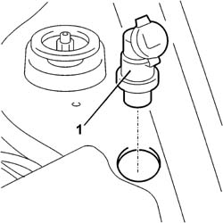

5050A14 reservoir plug (in engine bay) or windscreen washer fluid level sensor - check and top up if necessary
- Path
- Procedures > 50 AUXILIARY UNITS > 5050 SCREEN WASHERS AND HEADLAMP WASH/WIPE > 5050A windscreen and headlamp washer reservoir > 5050A14 reservoir plug (in engine bay) or windscreen washer fluid level sensor - check and top up if necessary
- Kind
- repair procedure (removal / refitting; the operation number is the code)
- Applies to
- all engines; all production periods
- Interactive page
- https://sloeber94.github.io/elrnDB-fDbl/en/#/2584855
Applies to: all engines; all production periods
 Removing
Removing
 Refitting
Refitting1. Remove the plug from the housing.

Applies to: all engines; all production periods
Refitting
RemovingUsing a funnel, fill the reservoir with the fluid.
Check the state of the plug and make sure that the filter inside is not blocked.
If this is not the case, replace the plug or clean the filter.
Fit the plug in its housing.
Topics that link to this page (12)
- J03 SCREEN WASHER NOT WORKING
- J05 BACK WINDOW WASHER IS NOT WORKING
- 0010K20 20,000km service coupon, emission control version
- 0010K40 40,000km service coupon, emission control versions
- 0010K60 60,000km service coupon - emission control versions
- 0010K80 80,000km service coupon - emission control versions
- 0010M01 100,000km service coupon, emission control versions
- 0010M20 120,000km service coupon, emission control versions
- 0010M21 120000 km service coupon for emission control versions with air conditioner
- 0010M40 140,000km service coupon - emission control versions
- 0010M60 160,000km service coupon - emission control versions
- 0010M80 180,000km service coupon - emission control versions